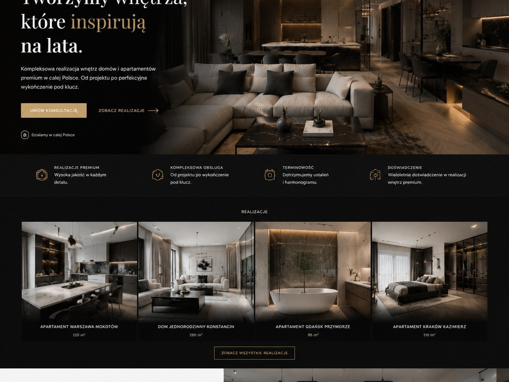
Apartament premium
Nowoczesny salon z kuchnią
Spójna kompozycja, naturalne materiały, ciepłe światło i elegancki detal.
Projektujemy i realizujemy domy, apartamenty oraz inwestycje klasy premium. Prowadzimy klienta od pierwszej rozmowy, przez dobór materiałów, aż po końcowe wykończenie i dopracowany detal.
W K&T Studio Stylu i Smaku stawiamy na estetykę, spokój współpracy i pełną odpowiedzialność za efekt końcowy. Dla naszych klientów liczy się nie tylko piękne wnętrze, ale także dyskrecja, terminowość i komfort całego procesu.
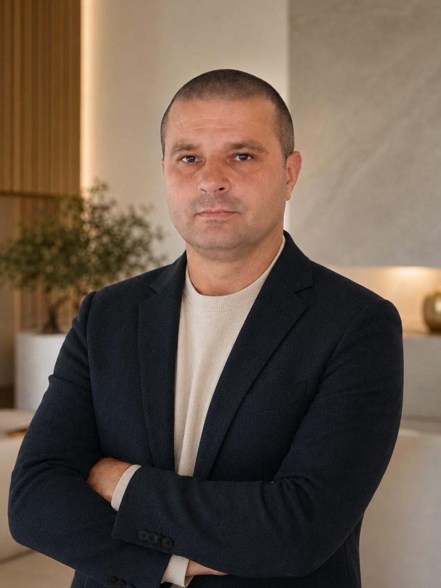
Tworzę wnętrza, w których liczy się proporcja, materiał i funkcja. Każdy projekt prowadzimy z dużą uwagą na detal i z myślą o realnym komforcie codziennego życia.
Pracujemy przy apartamentach, domach i prywatnych inwestycjach, w których liczy się jakość wykonania, spokojny proces i efekt, który broni się przez lata.
Koncepcja funkcjonalna i estetyczna dopasowana do stylu życia, standardu nieruchomości i oczekiwań inwestora.
Koordynacja wykonania, harmonogram, kontrola jakości i dopracowanie detalu od początku do końca.
Wnętrza nowoczesne, modern classic, old money modern, quiet luxury i realizacje szyte na miarę.
Wsparcie przy doborze materiałów, wyposażenia, rozwiązań funkcjonalnych i standardu wykończenia.
Przygotowaliśmy rozbudowaną galerię, aby klient od razu widział standard estetyczny K&T Studio Stylu i Smaku — od nowoczesnego apartamentu, przez modern classic, po ciepłe wnętrza old money modern.

Spójna kompozycja, naturalne materiały, ciepłe światło i elegancki detal.
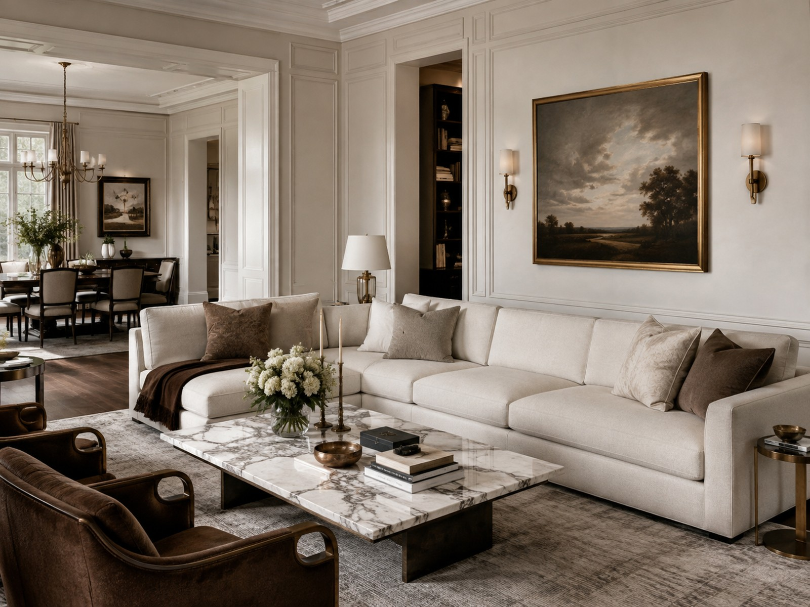
Miękkie proporcje, ponadczasowa paleta i wnętrze zaprojektowane do odpoczynku.
Kamień, miękkie światło i prywatny klimat hotelowego wellness.
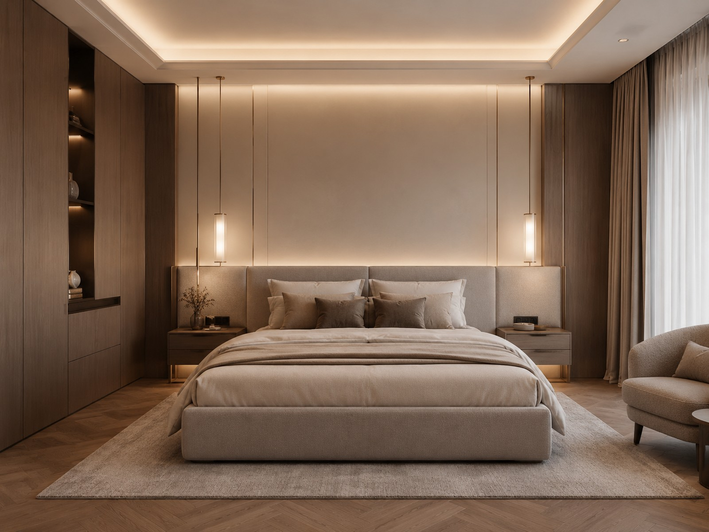
Przytulna strefa nocna z wyważonymi barwami i spokojną elegancją.
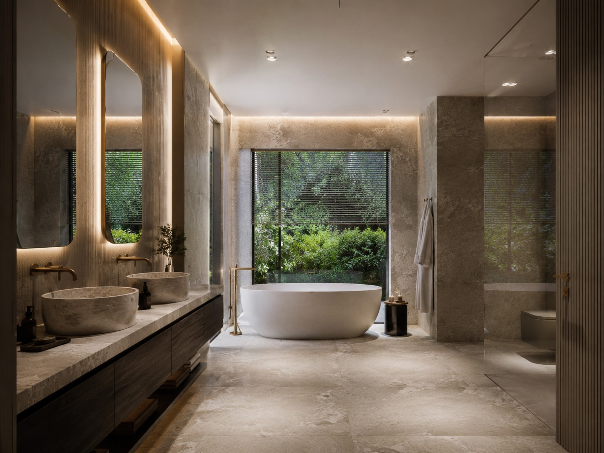
Wysoki standard wykończenia, harmonia materiałów i prywatność.
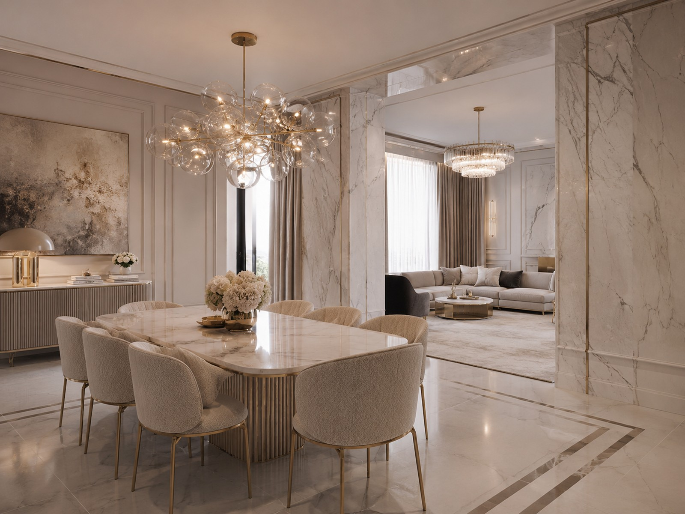
Mocny kamień, stolarka premium i klimat dopracowany w każdym detalu.
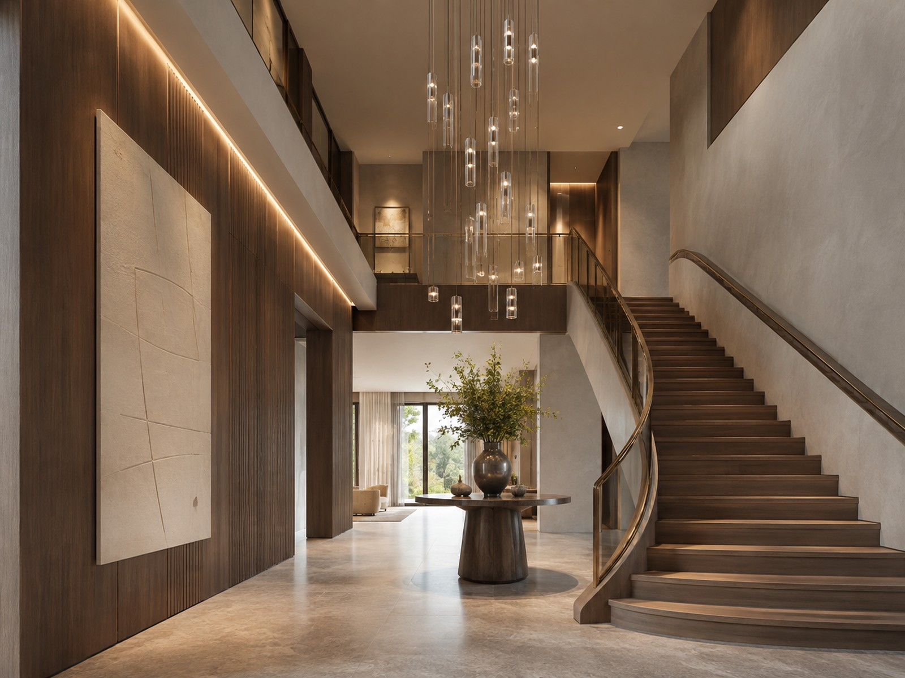
Wejście, które od progu buduje wrażenie jakości i skali całej inwestycji.
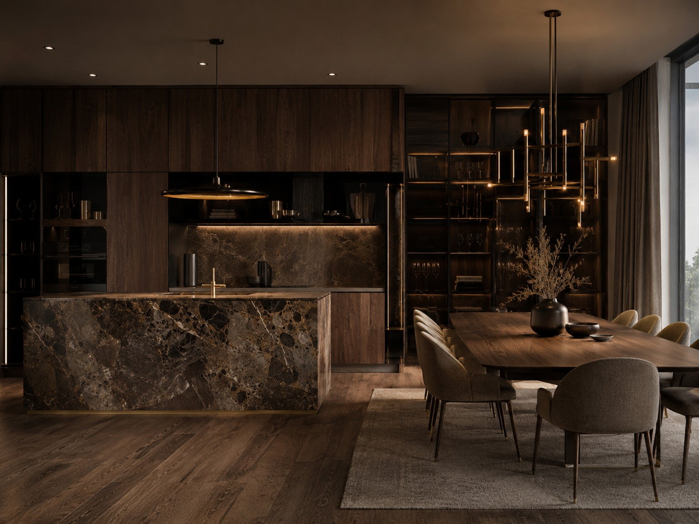
Szlachetne drewno, nastrojowe oświetlenie i luksus bez przesady.
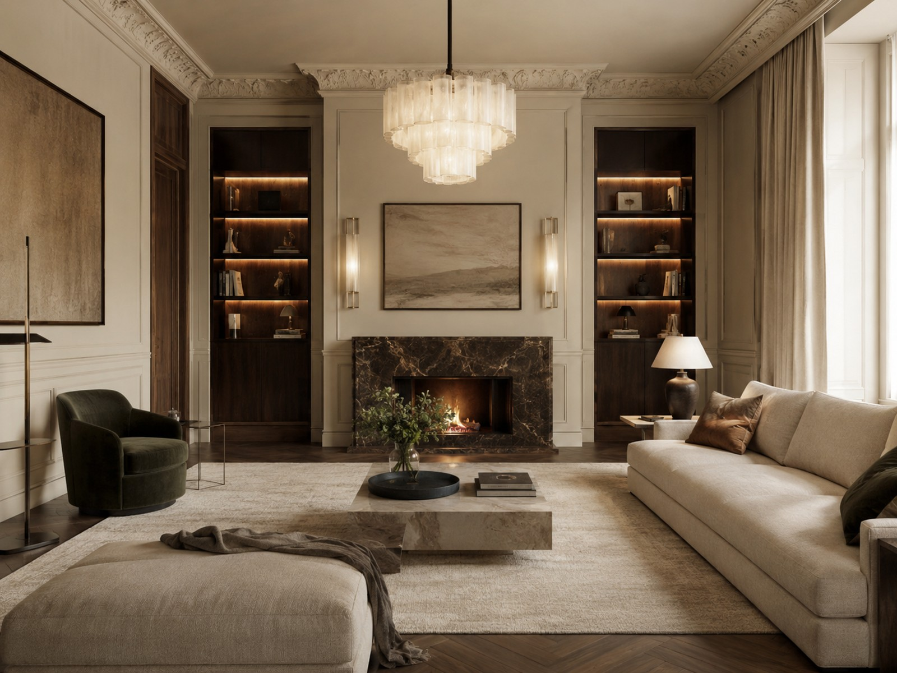
Wnętrze z klasą — ciepłe, eleganckie i stworzone do życia na co dzień.
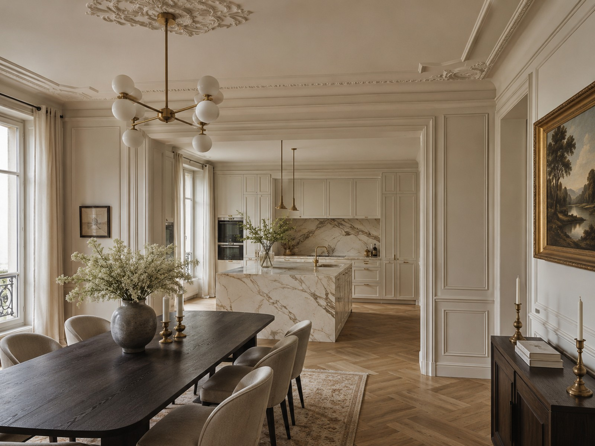
Jasna, luksusowa przestrzeń z subtelnymi złotymi akcentami i wyważoną formą.
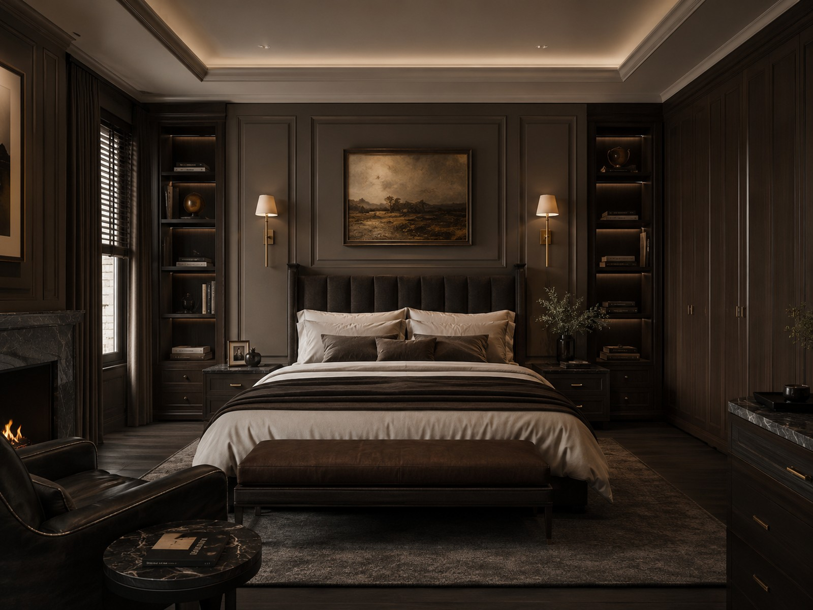
Kameralny nastrój, miękkie tkaniny i światło tworzące wyjątkowy klimat.
Projektujemy i realizujemy wnętrza, które mają wyglądać dobrze dziś i za wiele lat.
Klient ma wiedzieć, co dzieje się na każdym etapie. Dlatego pracujemy w czytelnym procesie, bez chaosu i bez przypadkowych decyzji.
Poznanie potrzeb, stylu życia, nieruchomości i oczekiwanego standardu.
Układ funkcjonalny, kierunek estetyczny, materiały i główne założenia.
Harmonogram, zakres prac, kolejność działań i przygotowanie wykonawcze.
Koordynacja ekip, kontrola jakości i dopracowanie rozwiązań w praktyce.
Końcowe dopracowanie, finalna prezentacja i gotowe wnętrze do zamieszkania.
Jeżeli tworzysz projekty wnętrz lub prowadzisz inwestycje, możesz liczyć na partnera, który rozumie standard premium i potrafi go dowieźć w praktyce.
Zapraszamy do współpracy architektów, inwestorów prywatnych, właścicieli apartamentów, domów i nieruchomości klasy premium. Działamy w Gdańsku i na terenie całej Polski.
Dodaliśmy sekcję blogową, żeby strona wyglądała na pełną i profesjonalną, a jednocześnie pomagała klientom podejmować lepsze decyzje.
Od czego zależy harmonogram i jak uniknąć opóźnień, które rozbijają cały proces inwestycji.
Zapytaj o realizacjęNie wszystko, co modne dziś, będzie dobrze wyglądało po kilku sezonach. Liczy się selekcja i proporcja.
Skonsultuj projektJedna odpowiedzialność, mniej chaosu i większa kontrola jakości nad całym procesem.
Porozmawiaj z namiSą elementy, które budują klasę wnętrza i wpływają na komfort codziennego życia bardziej niż modne dodatki.
Umów konsultacjęTa sekcja wzmacnia wiarygodność strony i pomaga klientowi szybciej zdecydować się na kontakt.
Dom, apartament, inwestycja prywatna lub współpraca z architektem — zacznijmy od rozmowy o Twoich potrzebach i oczekiwanym standardzie.
Poczta firmowa może zostać dodana później. Na ten moment najszybszy kontakt to telefon.